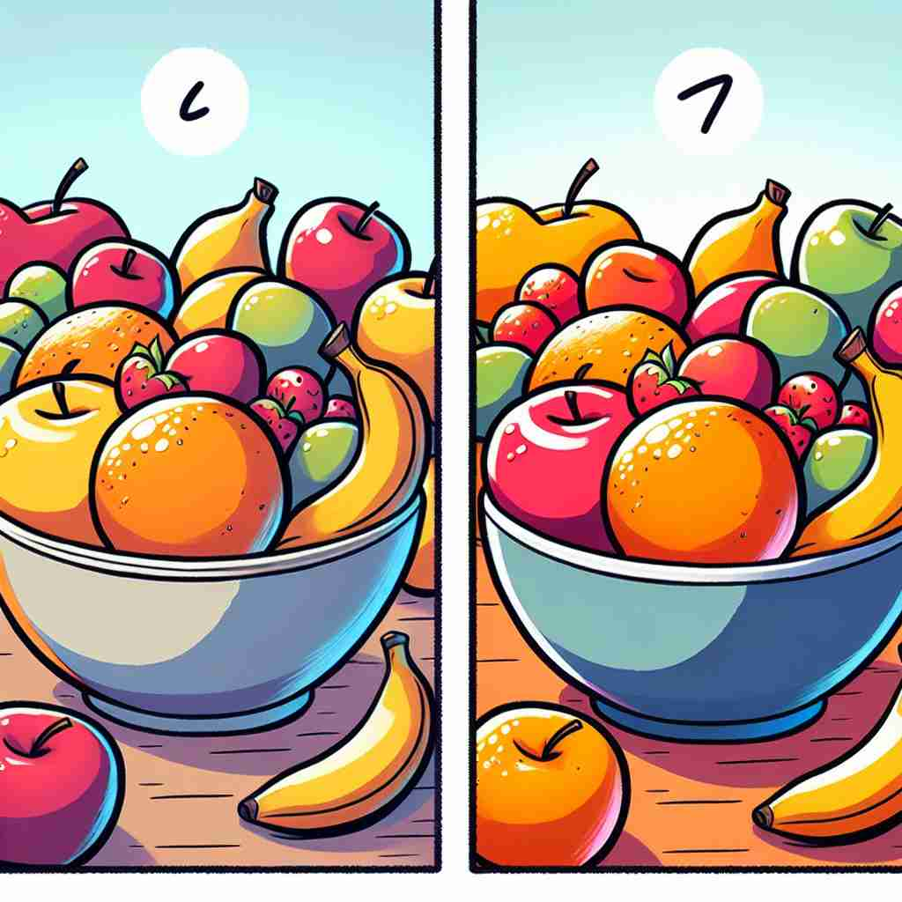

💬 The jar has less cake than before.

💬 The boy looks less worried as he stirs the milk.
💬 In summer, there is less snow on the ground.

💬 The second bowl has less fruit than the first bowl.
🔈 [les]
🗝️ adj. & adv. smaller in amount, size, or importance
🖼️ 在一个书店里，一名顾客正在比较两本厚厚的书。他感叹道："我只有两天时间，所以我会选这本 less pages 的书。"他的决定基于书的页数更少的原因。
🔍 记住'less'的核心含义是'更小'或'更少'。无论是数量、程度、重要性还是在数学运算中，都可以联想到这个'减小'的概念。这个核心意义贯穿了'less'的各种用法，帮助你更容易理解和记忆它的多重含义。
💬 The jar has less cake than before.
💬 The boy looks less worried as he stirs the milk.
💬 In summer, there is less snow on the ground.
💬 The second bowl has less fruit than the first bowl.
🌳 “less” 是源自古英语的形容词和副词，表示 "较少的" 或 "较少地"。作为后缀 "-less" 时，意味着 "无，没有"，如在 "hopeless" 中。
💡 记忆 “less” 时，可以联想到 "减少" 或 "没有" 的概念，帮助理解其作为词缀在构成负面或缺乏性质的形容词时的作用。
🗝️ adv. to a smaller extent or degree
🖼️ 在一个热闹的晚会上，音乐震耳欲聋。主人看着打电话的朋友，走过来说："我可以把音乐放到 less loud 吗？"他调低了音量，让朋友能更清楚地通话。
💬 The new car is less expensive than the old one.
❓ 从核心含义延伸到程度的比较
🗝️ prep. minus; deducting
🖼️ 在数学课上，老师在白板上写下一个题目："如果我们有 20 个苹果，less 4 个，剩下多少？"学生们开始认真计算，展示了'less'作为减去的概念。
💬 Ten less three equals seven.
❓ 从"更小"延伸到数学中的减法概念
🗝️ adj. of lower importance or consideration
🖼️ 在公司会议中，经理正在优先排序任务。他说："这个项目的优先级 less than 其他紧急项目，我们可以后续再处理。"大家点头同意，这个决定反映了项目的重要性较低。
💬 That's a less crucial issue than the budget deficit.
❓ 从数量上的"更小"延伸到重要性的比较
🗝️ det. not as much
🖼️ 在超市里，顾客正在挑选水果。他对朋友说："我这周要少买些水果，所以我买 less apples。"他选择的是少于平常数量的苹果。
💬 We need less sugar in our diet.
❓ 核心含义在限定词中的应用